A step-by-step guide for first-time users: from an empty brief to a finished, edited banner, with real screenshots and every option explained in plain words.
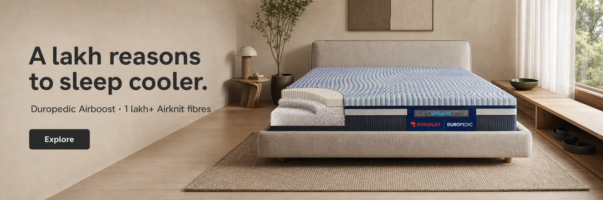
The Creative AI Studio turns a written brief into a finished picture. You describe what you want; AI does the writing, drawing and checking; you review, fix and download.
Filling in and checking the brief is free. These steps use paid AI services. The Studio always shows an estimate in rupees first.
| Action | Estimate shown | What it cost for this guide |
|---|---|---|
| Create one website banner | ₹18–₹45 | ₹34.01 (planning, drawing, checking, and one automatic redraw) |
| Home brief box reading | — | ₹0.30 |
| Each Send in Edit with AI | about ₹7 + about ₹5 for its check | ₹8.29, ₹8.72 and ₹8.74 for the three edits |
| Re-run check | shown on the button, here about ₹1 | not used |
All amounts are estimates in ₹ worked out from the AI providers’ list prices at the RBI reference rate of 9 Oct 2026 (₹96.61 per US dollar). They are not bills. Total for everything made for this guide: about ₹60.07. When the Studio cannot measure a cost it shows it as unknown, never as zero.
Everything you make in the Studio belongs to one brand. Before you do anything else, make sure Duroflex is the brand that is switched on.
http://127.0.0.1:1842/creative-ai/studio. Your team may give you a different link.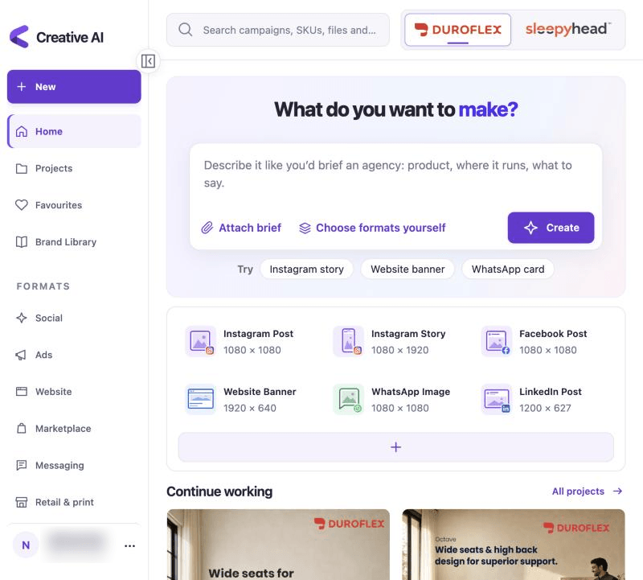
12345A format is the kind of picture you want and its size. A website banner is a wide strip, 1920 × 640 pixels (three times wider than it is tall). It usually sits at the top of a web page. There are three ways to start one.
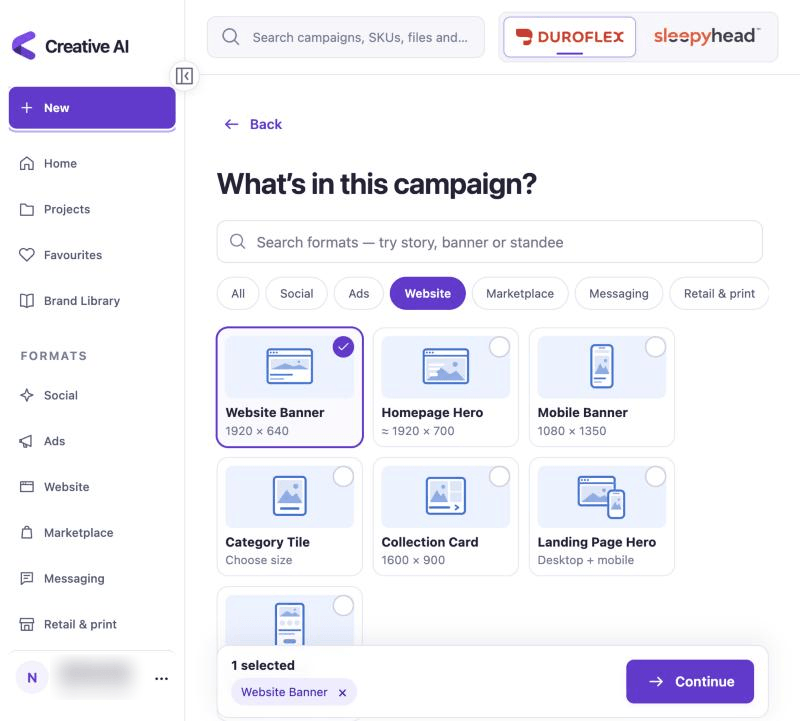
1234If you already have a brief in words, type it into the home brief box and press Create. The Studio reads it, works out the product, format, language and message, and opens the brief form already filled in. Nothing is made yet. You still check every value first.
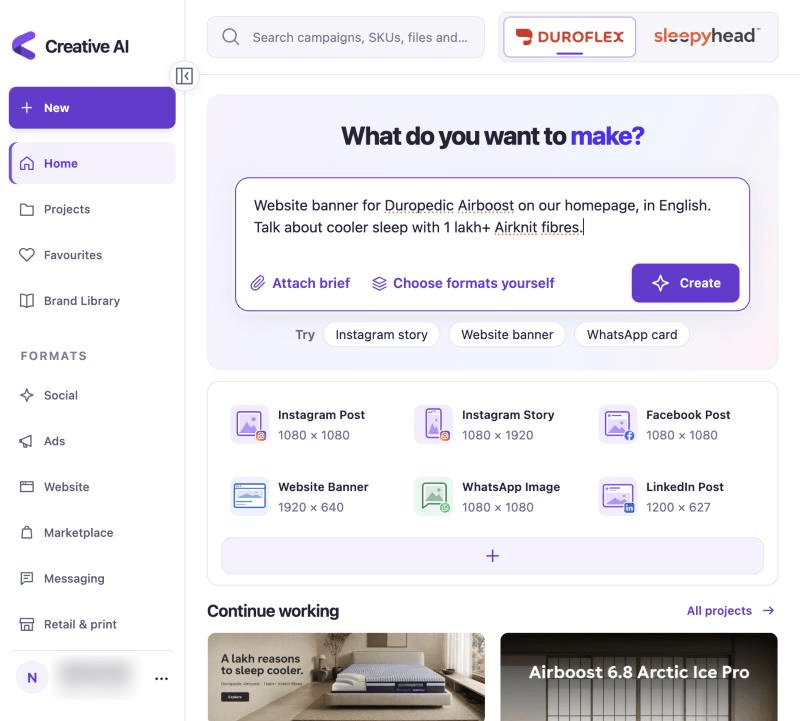
12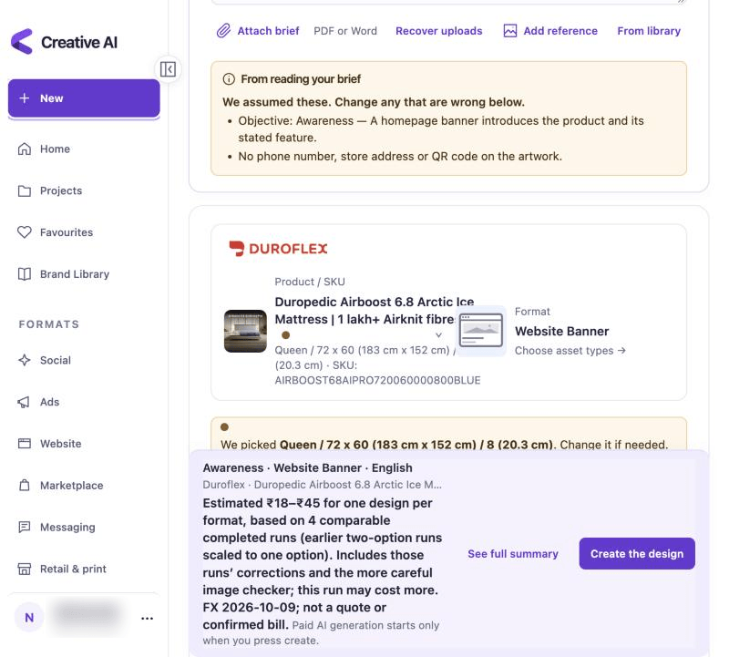
3On the brief form, a small dot beside a field tells you where its value came from. The key is at the top of the form.
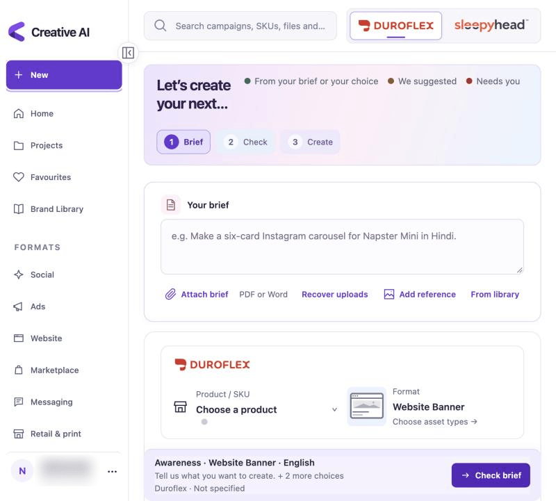
| Dot | Label | What it means |
|---|---|---|
| From your brief or your choice | You typed it, picked it, or the reading found it word for word in your brief. | |
| We suggested | The Studio chose a sensible default (for example the Queen size). Check it. | |
| Needs you | Required and still empty. You cannot create until it is filled in. |
The brief is your instruction to the Studio: what to make, for which product, and what it should say. The form is one long page. The top part looks like this.
Click Choose a product. The list shows the Duroflex products saved in the Studio, grouped by category, with the official website photos.
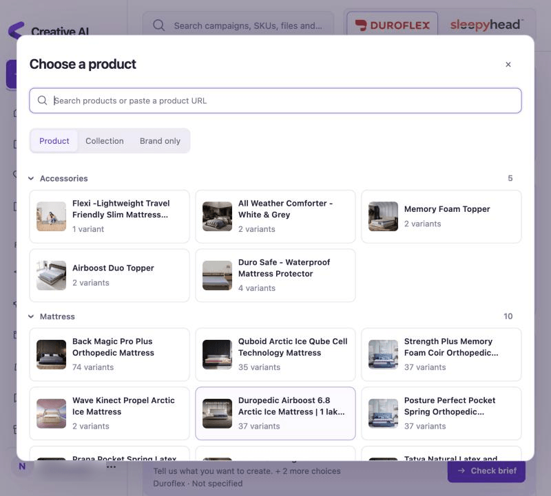
123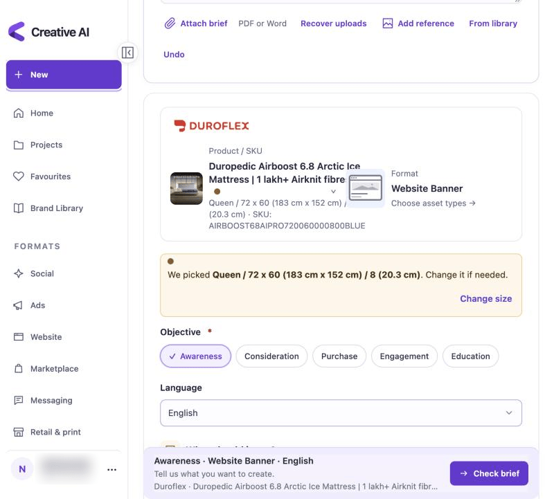
4567These four choices decide what the banner is trying to do and what it is allowed to say.
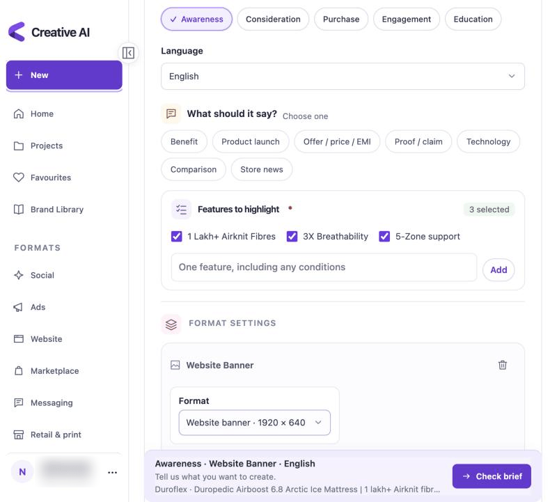
1234| Field | What to choose | |
|---|---|---|
| 1 | Objective (required) | Awareness: introduce the product to new people. Consideration: help people compare and see why it is better. Purchase: ask people to buy now, usually with an offer. Engagement: get people to react or reply. Education: explain how something works. |
| 2 | Language | The language of the words on the banner: English, Hindi, Hinglish, Kannada, Tamil, Telugu, Malayalam, Gujarati, Marathi or Bengali. |
| 3 | What should it say? (choose one) | Benefit: what the customer gains. Product launch: a new product. Offer / price / EMI: a sale or price; this opens the offer fields (Step 8). Proof / claim: a fact with its source, such as a certificate. Technology: how it is built; the Studio may show the product’s official technology picture. Comparison: how it compares, using only facts you have. Store news: a store opening or event. |
| 4 | Features to highlight (required) | Ticked from the product’s official web page. Keep the one to three that matter most for this banner. To add your own, type it in Custom feature with any conditions, then click Add. |
This box sets the size and a few website-specific choices. For a normal homepage banner you can usually leave them as they are.
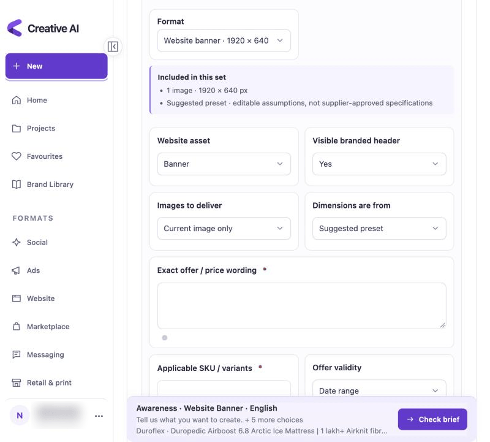
123456| Field | What it means | |
|---|---|---|
| 1 | Format | Website banner · 1920 × 640. You can switch to another size, or pick Custom size and type the width and height your web team gave you. |
| 2 | Included in this set | How many pictures you will get (here 1). “Suggested preset” means a common size, not a size your web team confirmed. |
| 3 | Website asset | Banner: a wide promotional strip. Category tile: a small tile that links to a category such as “Mattresses”; it adds Category name and Category label (shown as live website text or drawn into the picture). |
| 4 | Visible branded header | Yes: your website’s own header, with the Duroflex logo, sits right above the banner, so the banner leaves out its own corner logo. No: the page has no branded header, so the banner keeps the logo. |
| 5 | Images to deliver | Current image only: one desktop picture. Desktop + mobile: also a phone version; you then type the mobile width and height. |
| 6 | Dimensions are from | Suggested preset: the Studio’s usual size. Supplied specification: your web team gave exact sizes; type where they come from. |
When you choose Offer / price / EMI in Step 6, the form asks for the offer itself. The Studio shows this reminder: “Add the exact offer, terms and dates … Offers are never invented.” The values below are examples only.
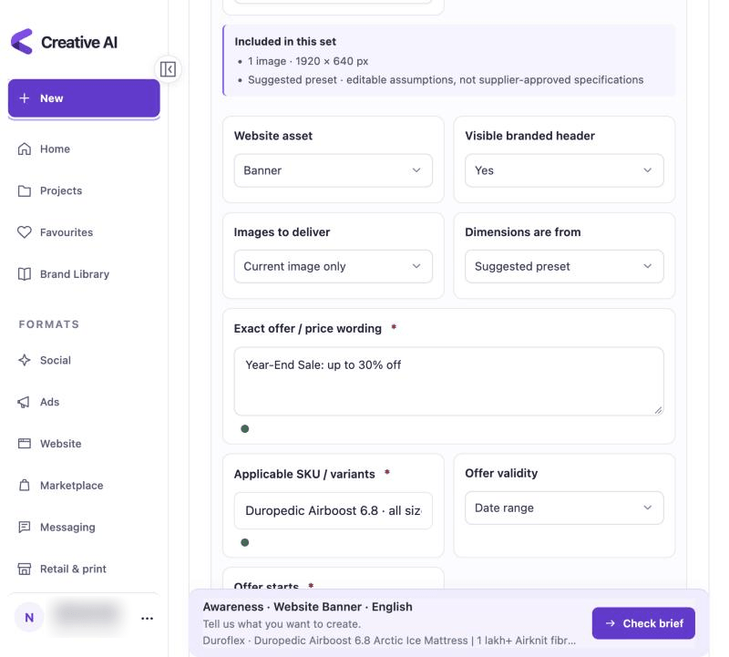
123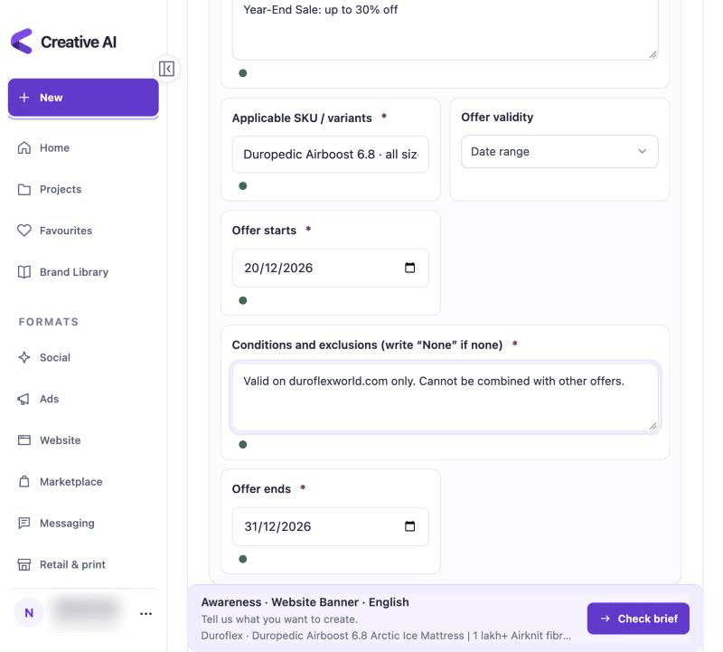
456| Field | What to write | |
|---|---|---|
| Offer or promotion (Yes / No) | Found under Sharpen targeting (Step 10). Choosing Offer / price / EMI sets it to Yes for you. Set it to No if the banner has no offer; the offer fields then disappear and nothing you typed in them is used. | |
| 1 | Exact offer / price wording | Copy it from the approved offer, letter for letter: “Year-End Sale: up to 30% off”. The banner uses these words as they are. |
| 2 | Applicable SKU / variants | Which products and sizes the offer covers, for example “Duropedic Airboost 6.8 · all sizes”. |
| 3 | Offer validity | Date range (needs a start and an end date) or Ongoing — no end date (needs only a start date). |
| 4 | Offer starts | The first day of the offer. |
| 5 | Conditions and exclusions | The small print, such as “Valid on duroflexworld.com only. Cannot be combined with other offers.” Write None if there are none. |
| 6 | Offer ends | The last day. It must be after the start date. |
Below the format settings there is a folded section called Sharpen targeting (optional). Click it to open. Nothing here is required, but each answer helps the Studio plan a sharper banner.
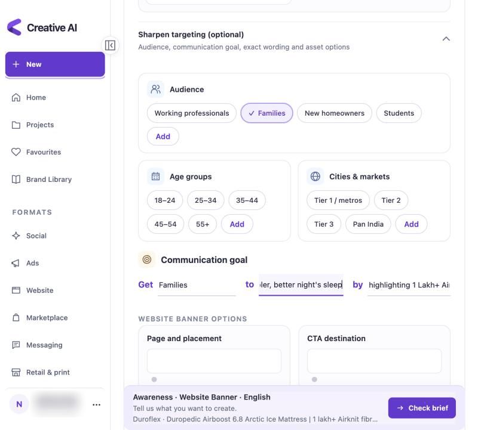
1234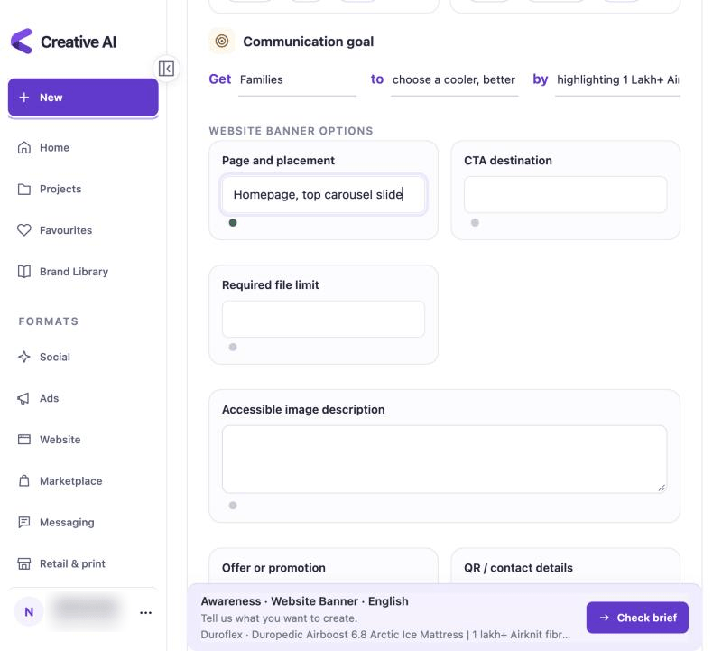
5678| Field | What it is for | |
|---|---|---|
| 1 | Audience | Who the banner speaks to: Working professionals, Families, New homeowners, Students, or Add your own. |
| 2 | Age groups | 18–24 up to 55+. Pick one or more, or add your own. |
| 3 | Cities & markets | Tier 1 / metros, Tier 2, Tier 3 or Pan India. |
| 4 | Communication goal | One sentence in three parts: Get (who) to (think, feel or do what) by (the message or benefit). Example: Get families to choose a cooler night’s sleep by highlighting 1 lakh+ Airknit fibres. |
| 5 | Page and placement | Where the banner will sit, for example “Homepage, top carousel slide”. Helps the layout. |
| 6 | CTA destination | The link the banner’s button opens. CTA means call to action, the button such as “Explore”. The link is not printed on the picture. |
| 7 | Required file limit | The largest file size your web team accepts, for example 500 KB. It is passed on with the brief; check the size of the file you download. |
| 8 | Accessible image description | A short sentence describing the picture for people who use screen readers (also called alt text). |
The rest of the section covers offers, contact details, facts that must appear, and where the banner sits in the customer’s journey.
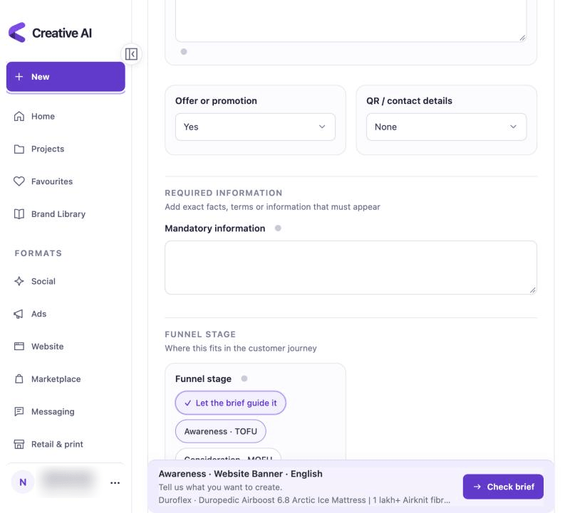
123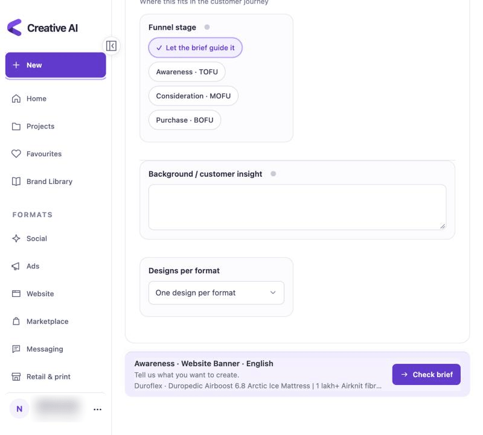
456| Field | What it is for | |
|---|---|---|
| 1 | Offer or promotion | Yes shows the offer fields (Step 8). No hides them and leaves out any offer text you typed earlier. |
| 2 | QR / contact details | None, QR code, Contact details or QR + contact. A QR code needs its exact link; contact details need the exact phone number or address. The Studio never makes them up. |
| 3 | Mandatory information | Exact facts, terms or lines that must appear on the banner, written word for word. |
| 4 | Funnel stage | Where the customer is. TOFU (top of funnel) = just discovering, MOFU (middle) = comparing, BOFU (bottom) = ready to buy. Let the brief guide it is the usual choice; your Objective is used first. |
| 5 | Background / customer insight | Anything true about the customer that explains the idea, for example “Many buyers say they wake up hot at night.” |
| 6 | Designs per format | Fixed at one design per format. |
There are no separate mood fields. Duroflex’s own look is built in: its rooms, colours, editorial photography style and real-looking Indian models come from the brand’s saved direction. To steer the look of one banner, use two things.
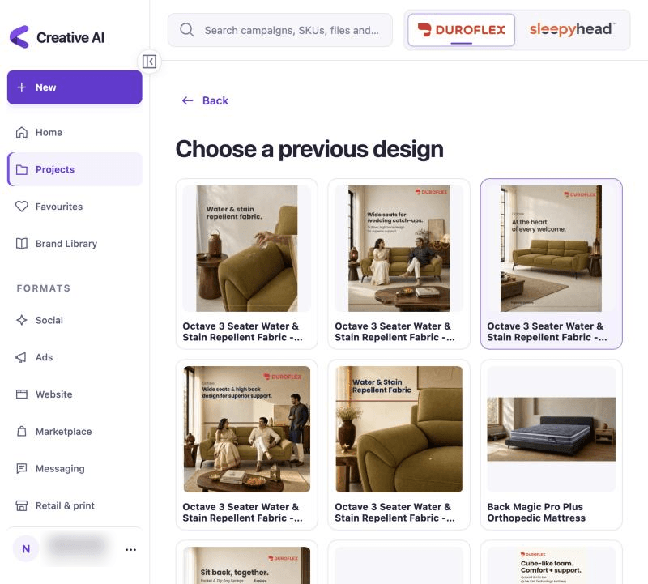
1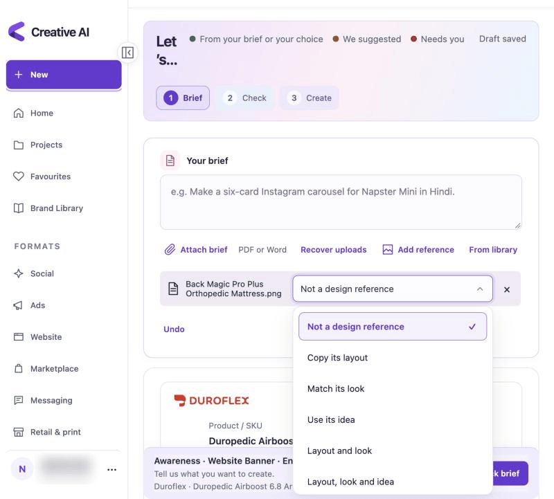
23| Choice | What the Studio does |
|---|---|
| Not a design reference | The picture is kept with the brief as a note and is not used to design. |
| Copy its layout | Places things where the reference does: text on the left, product on the right, and so on. |
| Match its look | Uses its colours, light and mood. |
| Use its idea | Borrows the creative idea or story. |
| Layout and look / Layout, look and idea | Combinations of the above. |
When every required field is filled, the summary bar at the bottom shows a cost estimate in rupees and a Create the design button. Checking costs nothing; only Create starts paid AI work.
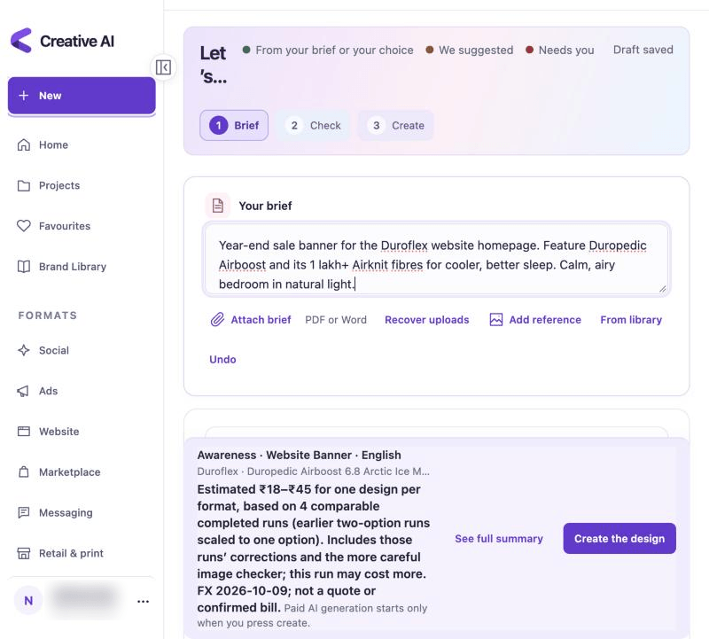
123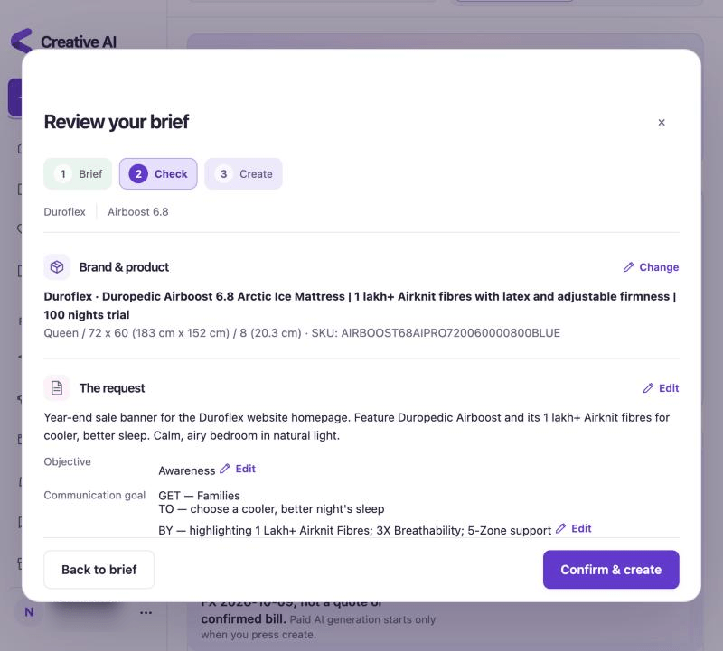
45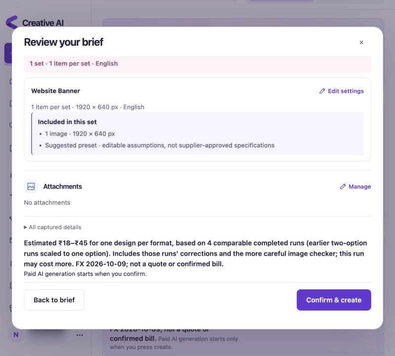
6After Create, the project page opens. You do not need to keep it open: the work carries on by itself, and the page updates automatically. A website banner usually takes about 10–20 minutes.
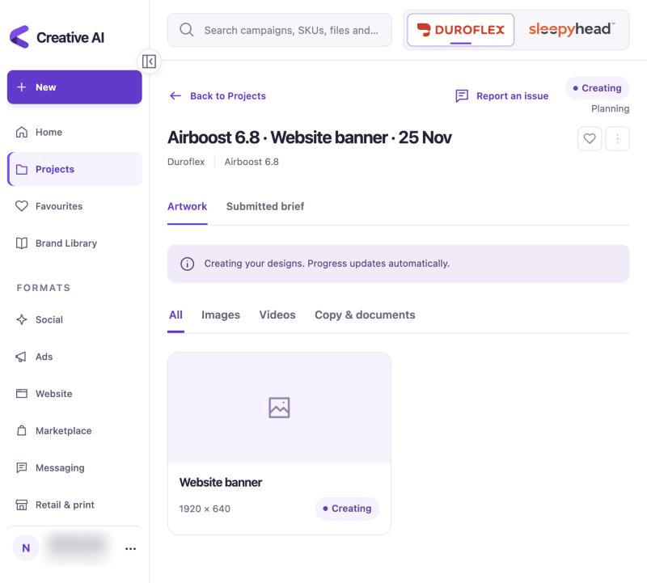
12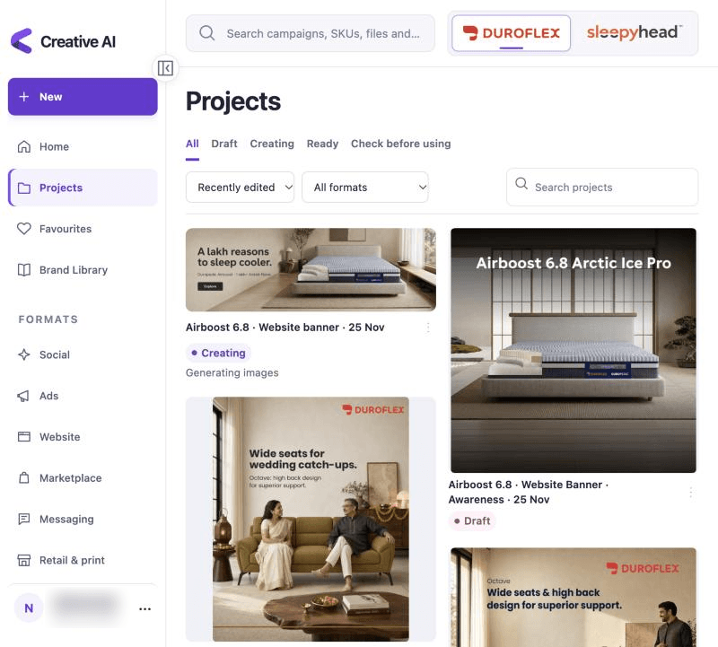
34| Status | What it means | What you do |
|---|---|---|
| Draft | A saved brief. Nothing has been made. | Open it to finish the brief. |
| Creating · Planning | The AI writes the headline, picks the layout and plans the scene from your brief and Duroflex’s rules. The longest stage. | Wait. |
| Creating · Generating images | The picture is being drawn, using the product’s real website photos. | Wait. |
| Creating · Checking images | A second AI compares the picture with your brief, the product photos and the brand rules. If it finds a fixable problem it tries one correction or redraw. | Wait. |
| Waiting for a free slot | Other designs are being made first. This one continues by itself. | Wait. |
| Ready | The design passed every saved check. | Look at it, edit if you like, download. |
| Check before using | The design is saved, but a check found a problem, or could not confirm something, or the design was edited after its check. | Look closely before you use it (Step 15). |
| Needs attention | Creation stopped or something is missing. | Open the project for the reason and the recovery options. |
When the status turns green or amber, click the design to open it. Under the picture is the Brief panel: your request, its tags, the size, and the Did it deliver? list.
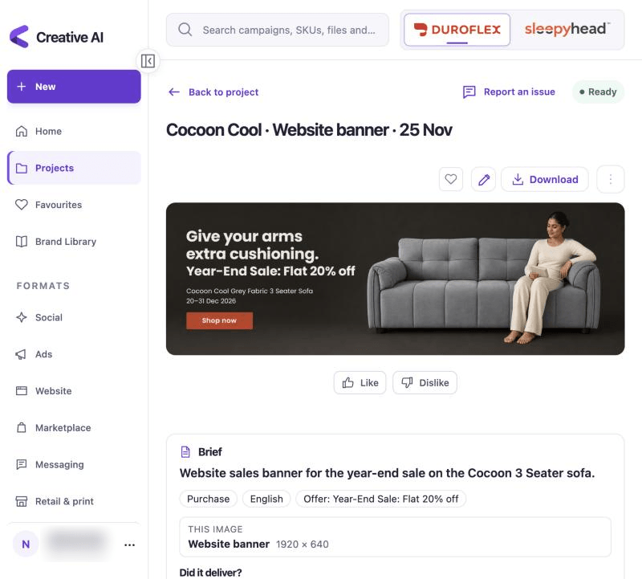
12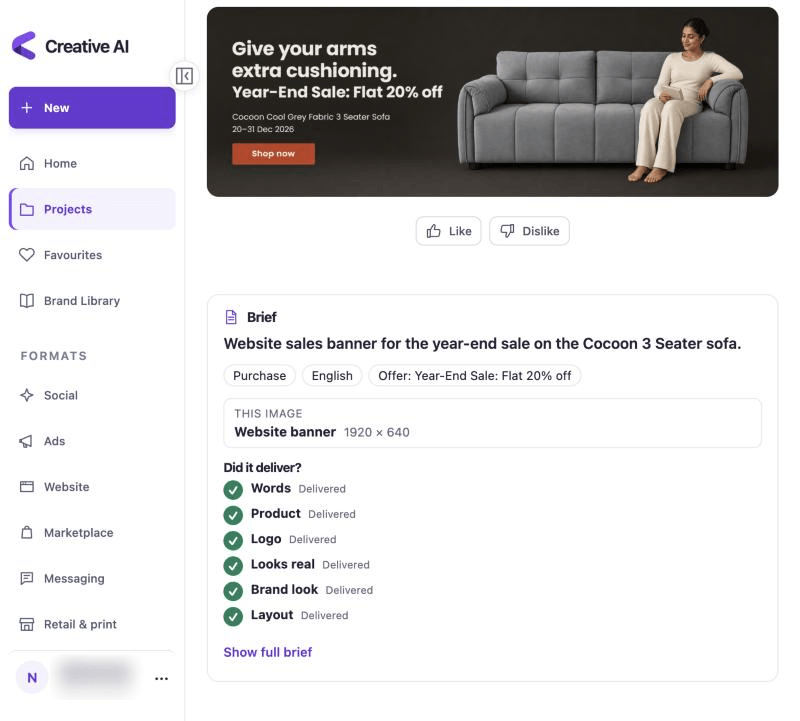
34| Row | What was checked |
|---|---|
| Words | The headline and other words match the plan, are spelt correctly and are readable. |
| Product | It is the right product: its shape, colour, label and its wording, its features, its inside layers, and no extra products. |
| Logo | The Duroflex logo is correct, or correctly left out. |
| Looks real | Real-looking materials, light and shadows; people at the right size next to the product. |
| Brand look | Background colour, kind of scene and casting follow Duroflex’s direction. |
| Layout | Nothing cut off at the edges, enough calm space, the layout planned for a website banner. |
Each row says Delivered (✓), Check (!) with the reason underneath, or Not sure (?) when the picture alone could not prove it.
An amber status means the design is saved, but a check found a problem or could not confirm something. Here is the real Airboost banner made for this guide.
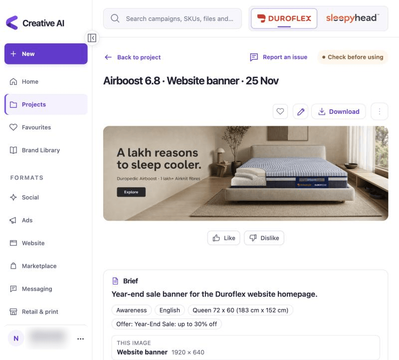
12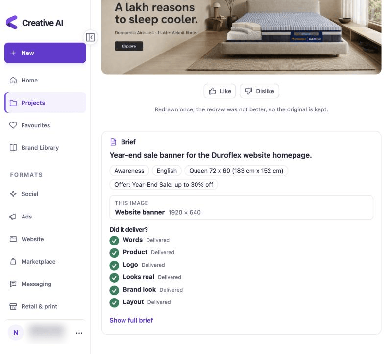
3In this design every row of Did it deliver? said Delivered. The problem was text size, which is not one of the six rows: the small line under the headline is about 13 pixels tall, and on a website it needs about 21 to be read comfortably.
At the bottom of the Brief panel, Show full brief lists everything the brief form asked, grouped the same way. Use it to check what a design was asked to do, or to copy a teammate’s brief.
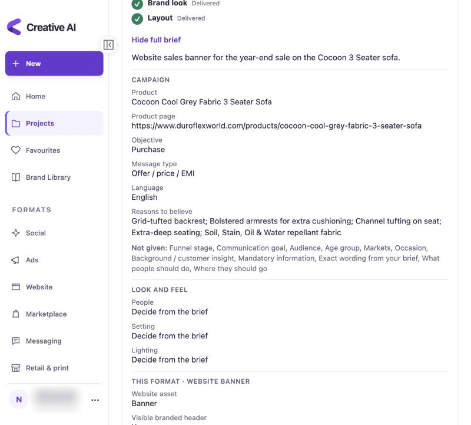
12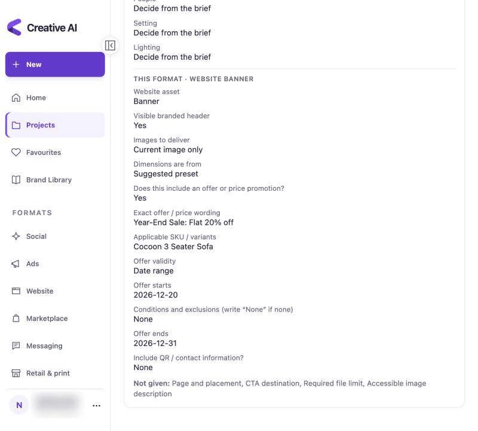
34Open the design and click the pencil button next to Download. The image editor opens with the Edit with AI panel. You point at what to change with numbered pins and write one comment per pin.
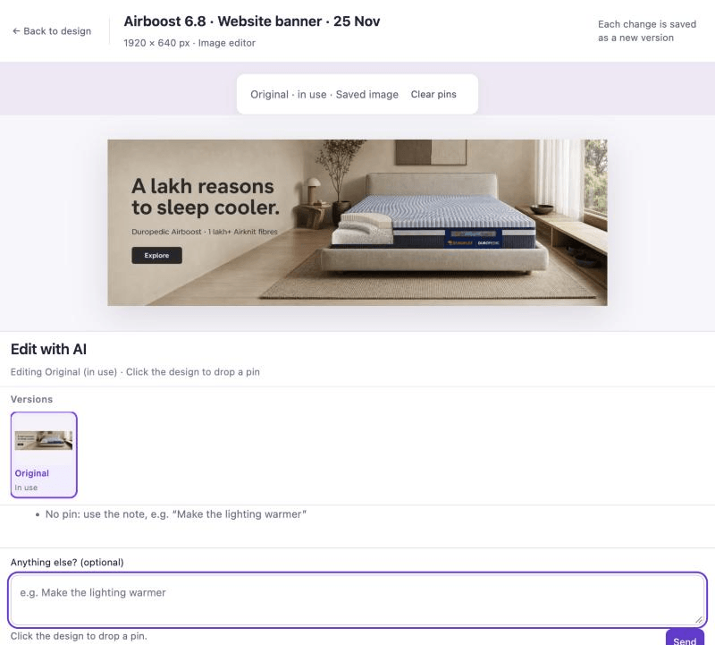
123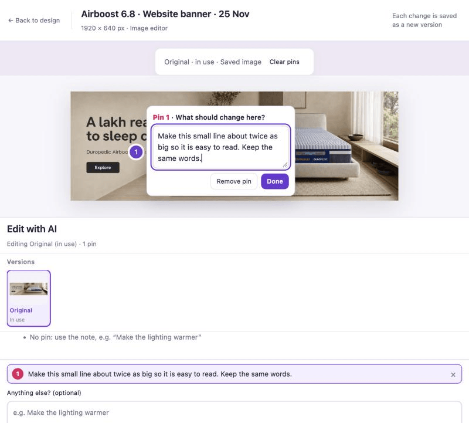
45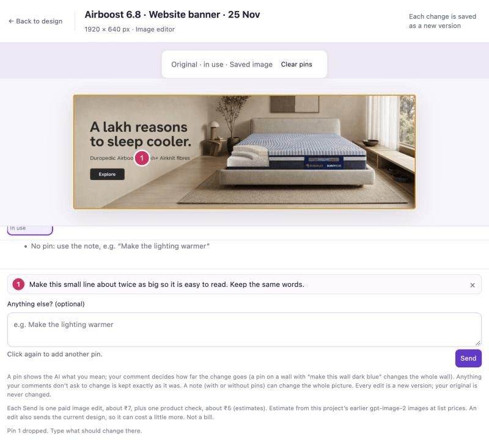
678After Send, a new version appears with “Creating…”. About a minute later it is ready, and the Studio has already run a quick product check on it. A new version is shown, but it is not used until you choose it.
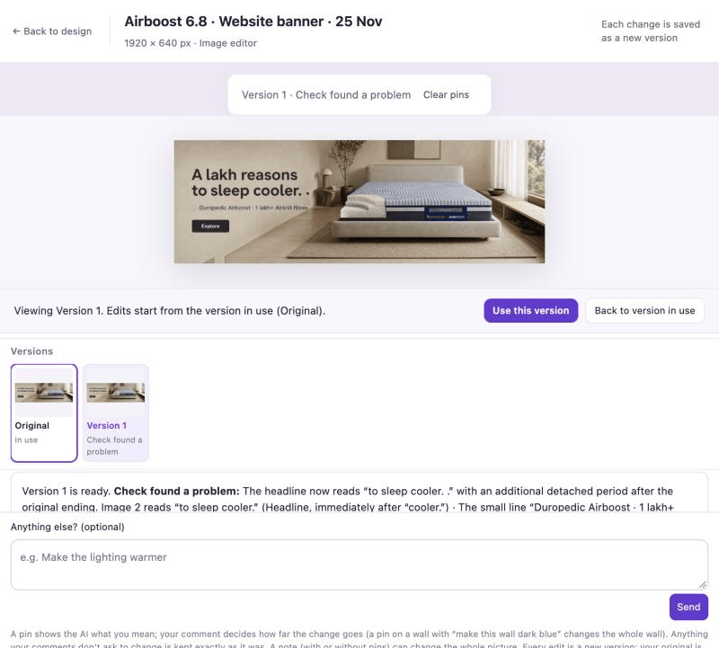
12345| Product check result | What it means |
|---|---|
| Product checked | The product still looks right, the edit did what you asked, and nothing else seems damaged. |
| Checked, some unsure | The check could not tell everything from the picture. Look at those points yourself. |
| Check found a problem | Something is wrong: read the reason. Usually go back to the version in use and try again. |
| Not checked | The check could not run. The version is kept, but unchecked. Look carefully before using it. |
To fix the too-small line from Step 15, three edits were sent for this guide. Each started from the original. Here is what came back, close up.
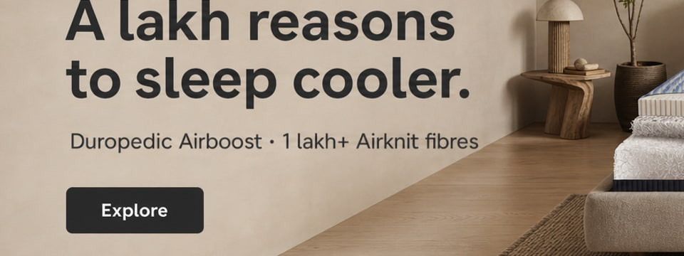
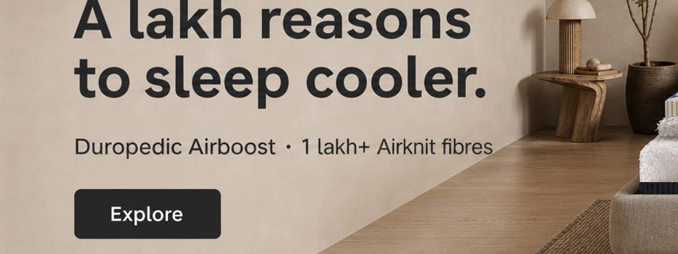
| Try | What was written | What we learned |
|---|---|---|
| Version 1 | Pin on the line: “Make this small line about twice as big so it is easy to read. Keep the same words.” | Changing the size of text is one of the hardest edits. Read the check: it caught all three problems. |
| Version 2 | Pin on the line: “Enlarge this line so its letters are as tall as the word “Explore” on the button below. Keep the exact words “Duropedic Airboost · 1 lakh+ Airknit fibres”, the same font and colour. Change nothing else.” | A precise comment with the exact words and something to compare with worked better. Its check passed, but by eye the line is only a little bigger and bolder, not as tall as “Explore”. Always compare with your own eyes. |
| Version 3 | No pin. Note: “Make the small line … about 60% bigger … Keep everything else exactly as it is.” | A note re-draws the whole picture: the headline, button and room all moved a little, and the right edge was damaged. |
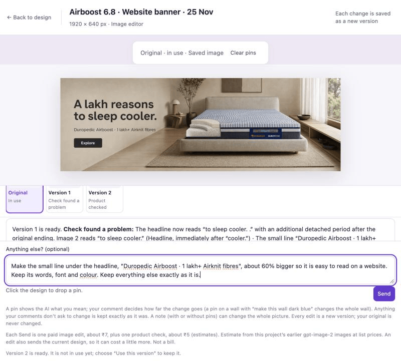
1For this guide, Version 2 was chosen: its check passed and nothing else in the picture changed.
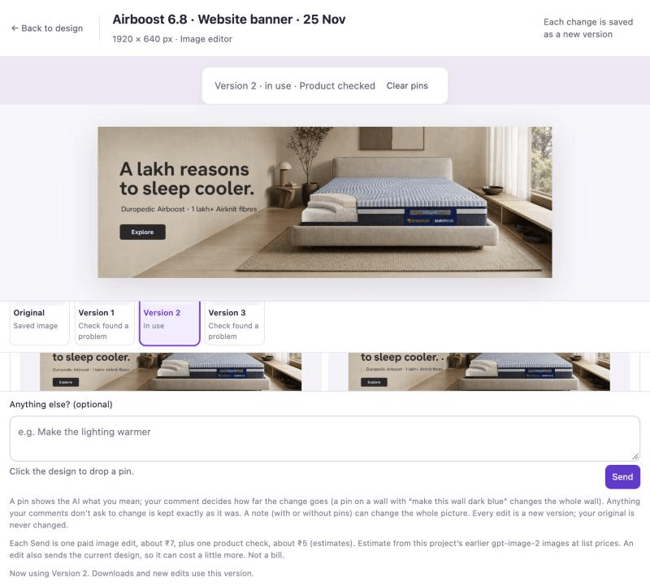
12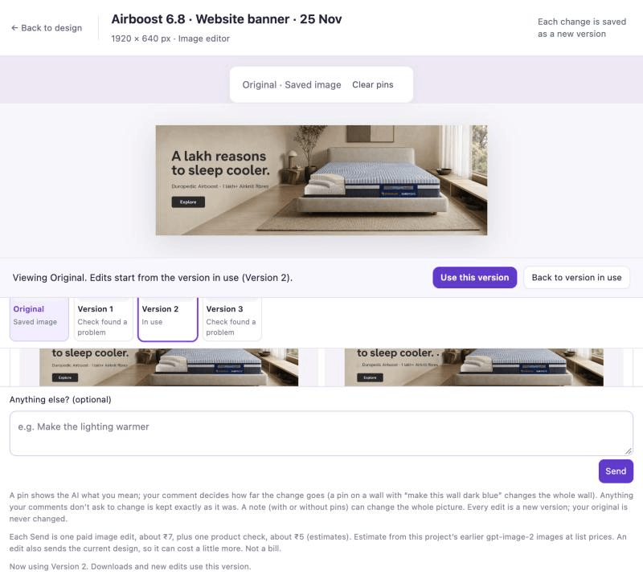
345Sometimes a design is saved but its check never finished (for example the internet dropped). The design page then offers Re-run check.
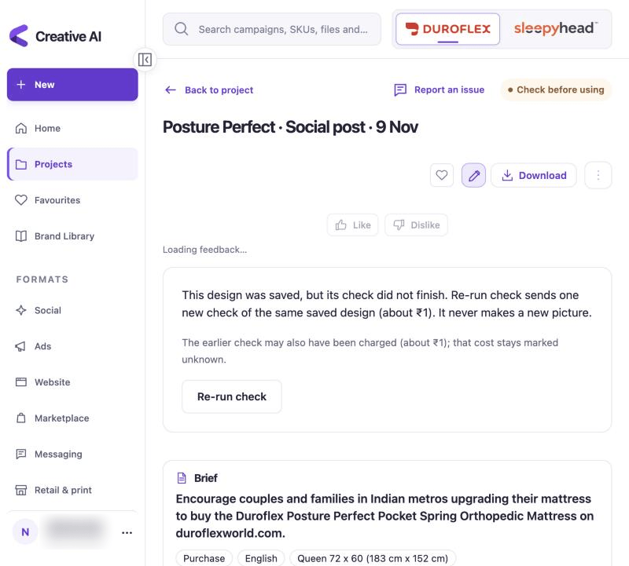
123The button only appears when a check is missing, was interrupted or failed. A design whose check finished (Ready or Check before using) does not show it.
Older designs could be opened in a layer editor, where text, logo and shapes were separate layers you could move. Designs made today cannot be opened in the layer editor. The pencil button on a new design always opens the image editor with Edit with AI (Step 17), because the words are part of the picture. To change words, drop a pin on them and write the new wording.
When you are happy with the design, download it from its design page.
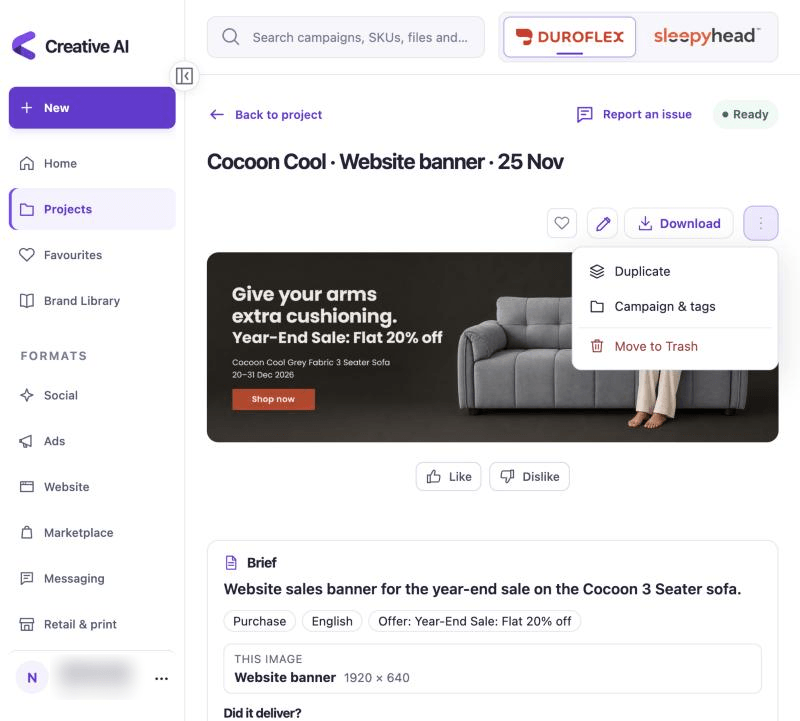
1234